My Work
Recent Illustrations & Practices
Here you'll find a selection of my recent projects, showcasing my skills in graphic design and illustration. From branding and marketing materials to personal art pieces, I take pride in my ability to simplify complex ideas into workable designs and illustrations. Click on any of the images to bring up a larger view and learn more about each one.
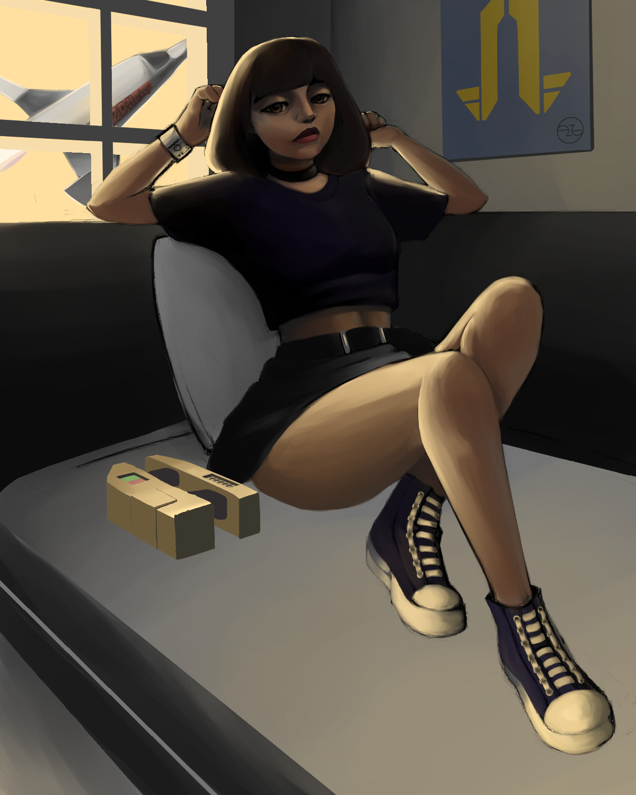
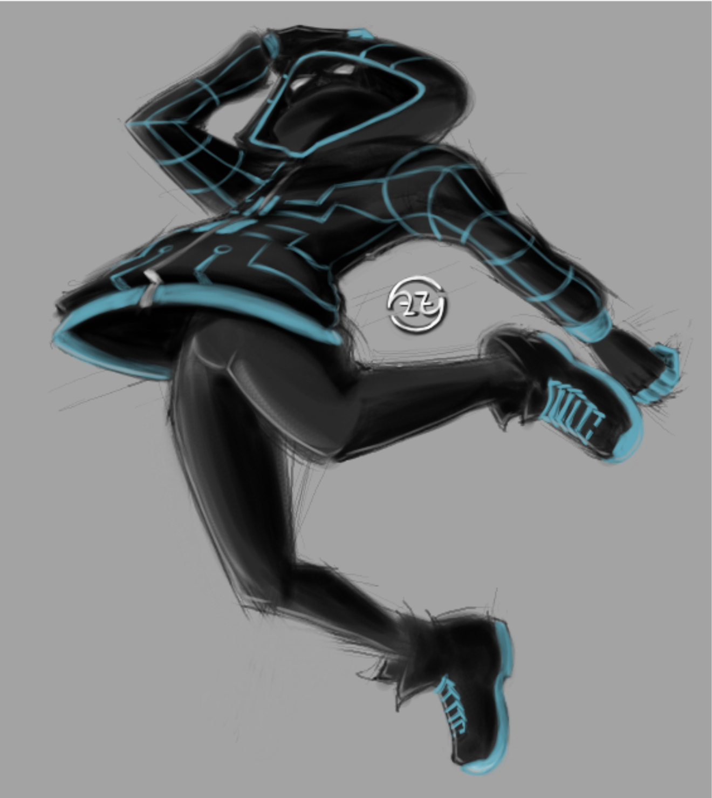
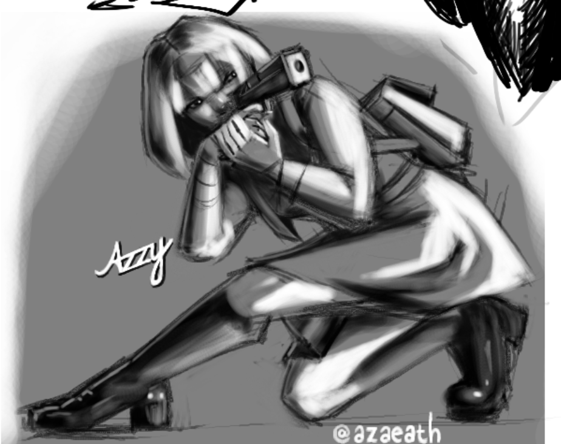


Class Materials
Here you'll find a selection of my class materials, demonstrating key concepts and techniques in graphic design and illustration that my former students found helpful in their creative pursuits. Click on any of the images to bring up a larger view and learn more about each one.

 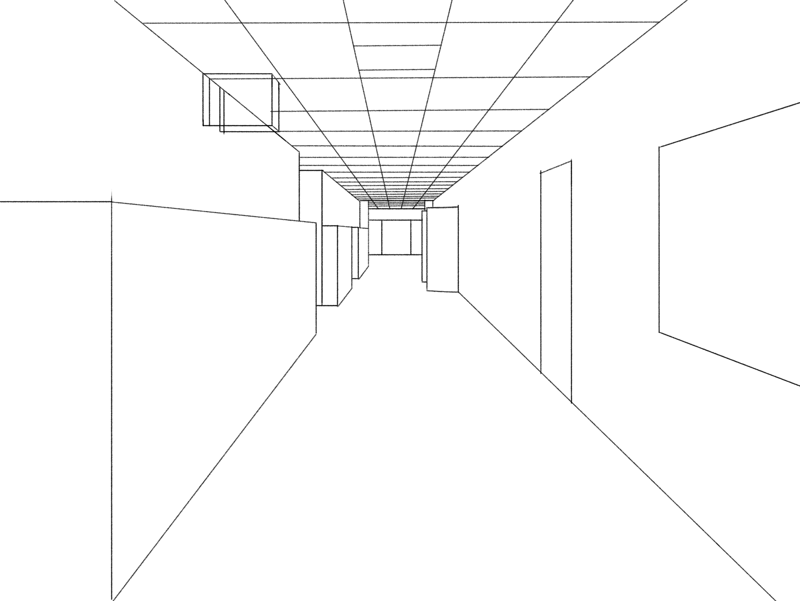
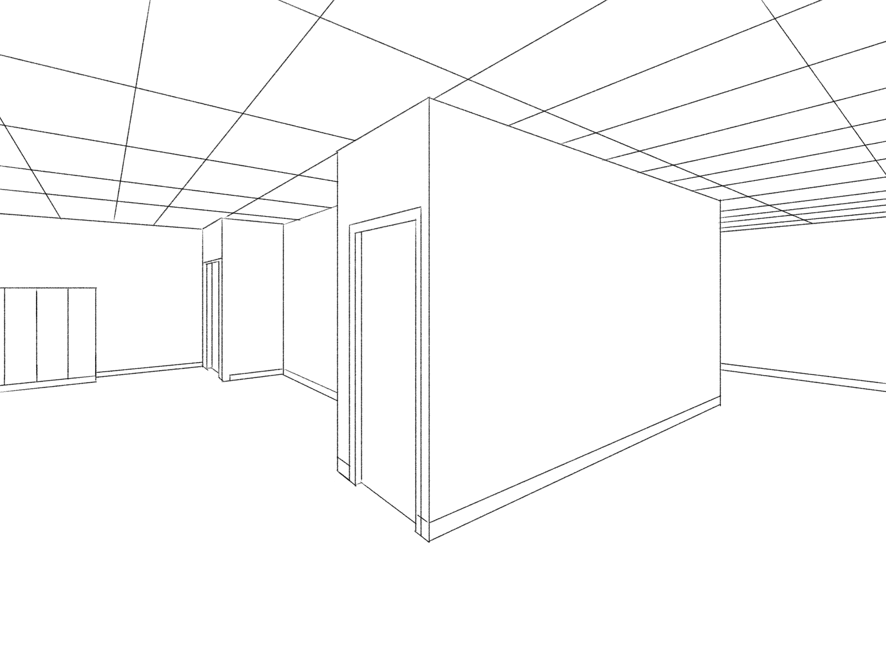
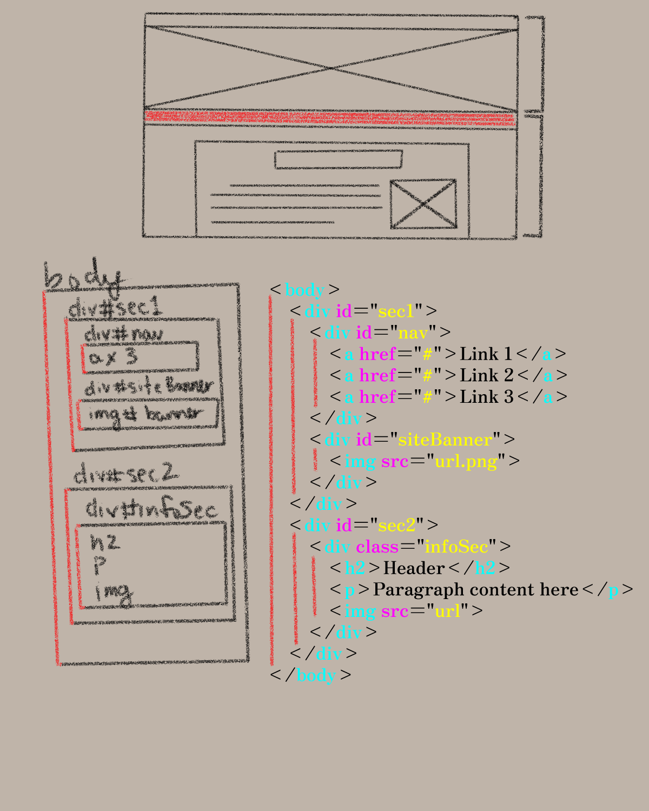
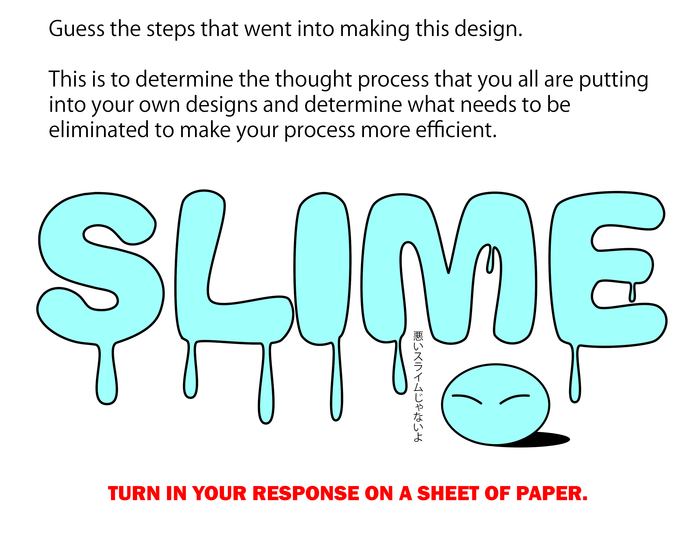
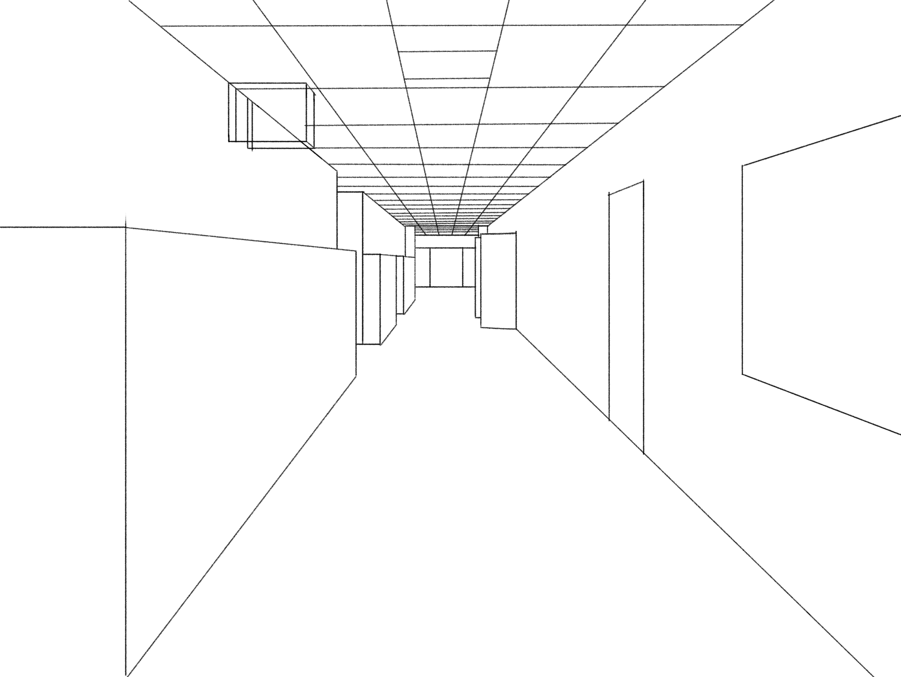
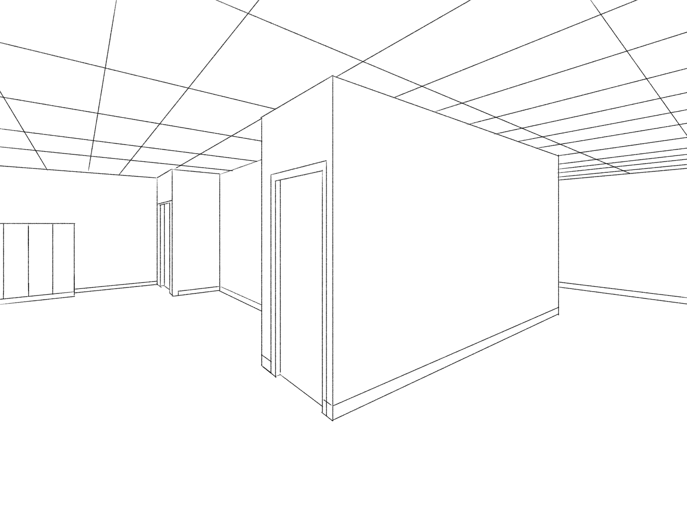
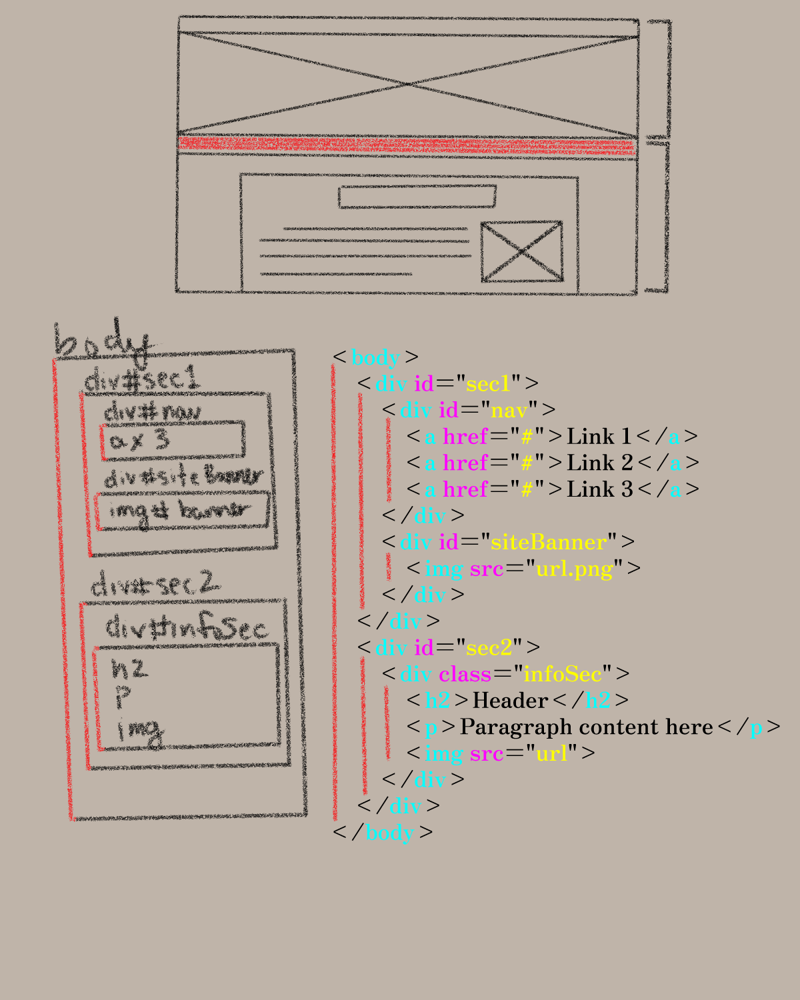
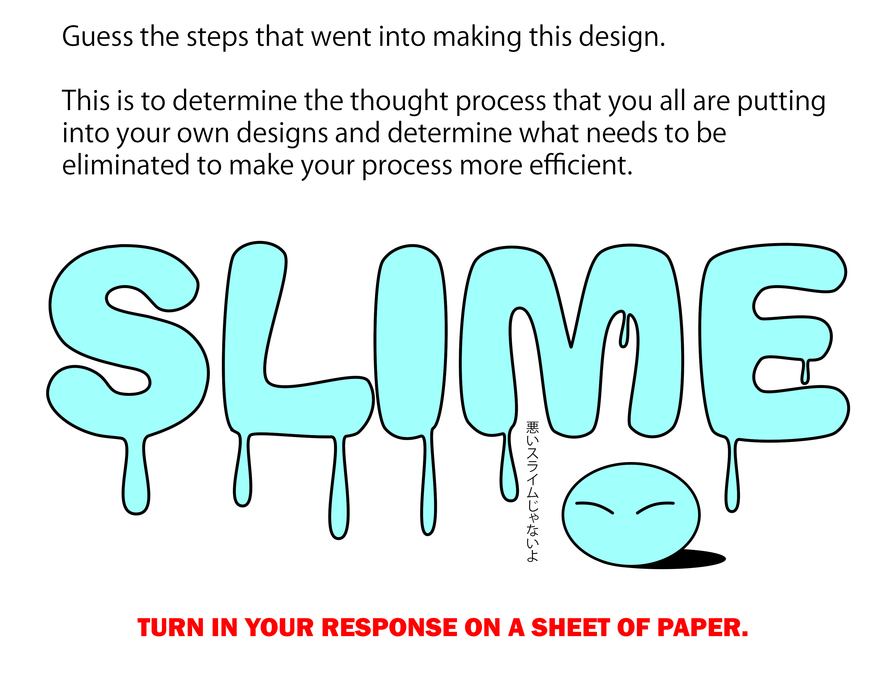
Garcia Portrait Practice
This was actually my second attempt.
I honestly don't remember who the subject was because I didn't save the file with anything other than the person's last name. I found the model used as the subject when I was looking for some images on Pinterest for reference, and I really wanted to draw a portrait of someone for some practice because people and portraits are my favorite subject matter.
Colored Illustration Practice
These titles are uninspired, I know.
This is actually an unfinished piece that I was using to practice my application of color and to get away from the habit of heavily relying on lines to establish boundaries. It's not a finished work in the sense that I would normally quaiify one of my own, but I felt it was good enough to show as an example of the extent that I would take a practice piece before calling the practice, itself, done.
Spider Concept
I had a decent amount of fun creating this one.
This was actually part of a piece done with a friend, wherein we both tried to design a spider suit for Miles Morales after my friend compared his look in one of his video games to a tube of toothpaste. My idea was based around the concept of his electrical powers being integrated into his suit with an emphasis on a relation to modern technology and circuitry.
Magma Illustration Practice
I spent some time experimenting with quick monochromatic studies.
This was a piece I did on Magma, using a reference from a board I created on Pinterest. This was during a point in my teaching career where I was trying to demonstrate to my students how focusing on gesture and form, with a limited palette, could help them to produce their ideas with more speed and get away from the idea that everything needs to be a highly detailed, finished piece.
Adventure Time Fan Art
This is still one of my favorites, even though I did it a while back.
This is a piece I did a few years ago, maybe around 2021, when I was first starting out on Twitch, looking to reach Affiliate status. It was one of the few projects I've done wherein I actually took the time to draw a background, something I've been neglecting since my time in college, since I prefer to draw characters more than environments.
Krypto Sketch
Up, up, and away!
This is a sketch I decided to do when I didn't know what else to draw, and my friend, who has since passed, was watching Smallville. While she was watching, I was reminded of the cartoon show about Superman's dog that I used to watch as a kid. I decided to do a study of one of the images I found on the internet, since drawing animals isn't something I do often.
Apples Drawing Demo
My students hated these. 🤭
This is a drawing I did as a live demonstration in front of my students, focusing on silhouette and lighting techniques. I wanted to demonstrate to them that even with the two fundamentals of shape and lighting, you can create a compelling image without needing to rely on intricate details. This was part of a series of demonstrations aimed at helping them understand these concepts more deeply.
Wine on Table Demo
My students hated this one even more. The original had grapes that I omitted for them. 😂
We had a fun time in class with this one because they swore I was trying to do them dirty by having them draw glass bottles and grapes. To be fair, I had them working from an image instead of live objects. They would've really hated me if they had to draw the original setup from varying angles. 🤭
One Point Perspective Demo
My students found this one challenging.
This is a demonstration I did to help my students understand one-point perspective. We discussed the importance of vanishing points and how they can be used to create depth in a drawing. The students had a hard time grasping the concept at first, but with some practice, a decent number of them started to get the hang of it. Some still struggled with the concept in the end.
Two Point Perspective Demo
My students found this one even more challenging.
This is a demonstration I did to help my students understand two-point perspective. We explored how objects can be represented in three-dimensional space using two vanishing points. The students found this concept even more challenging than one-point perspective, but with guidance and practice, many of them were able to grasp the basics. We still had a few laughs throughout the process because they swore this was some stuff I was just coming up with out of nowhere. 😂
Wireframe and Breakdown
This was when my students just started giving up.
This is a demonstration I did to help my students understand wireframing and breakdown techniques. We discussed the importance of planning and structure in making a web page. Unfortunately, many students found this approach overwhelming and struggled to apply it effectively. The major roadblock for many of them was the idea of coding, something they viewed as daunting and for people they viewed as "smarter" than they considered themselves able to become, which led many to just throw their hands up and not try.
Slime Typography Demo
Boy, did they hate typography.
My students had a habit of over-complicating everything that I gave to them, which made it difficult for them to focus on the core concepts. This often led to frustration and confusion, as they struggled to grasp the fundamental ideas I was trying to teach. This example was given along with an exercise to see just what they were thinking when approaching this, allowing me to give feedback as needed to those who were struggling. I ultimately found that the reason for the struggles was that they weren't practicing anything that I had taught them prior, especially the use of vector tools, which was essential to their understanding and completion of the material.